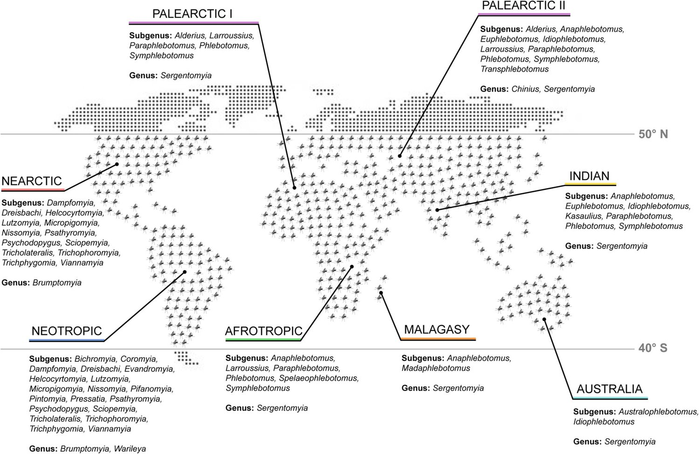
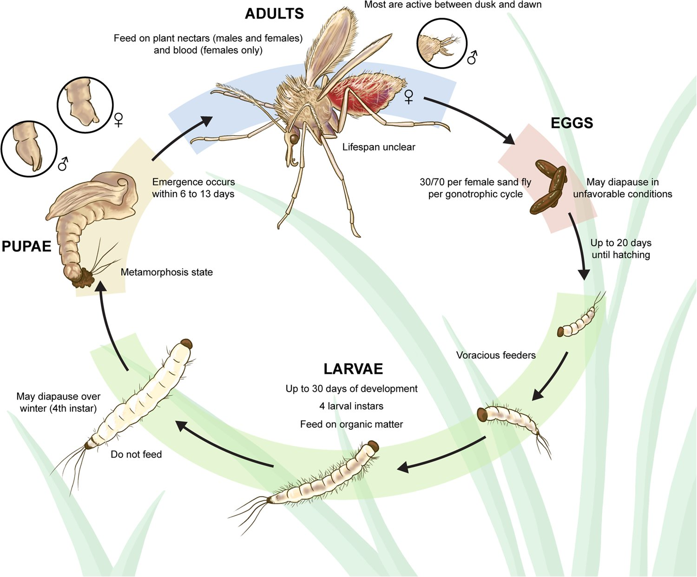
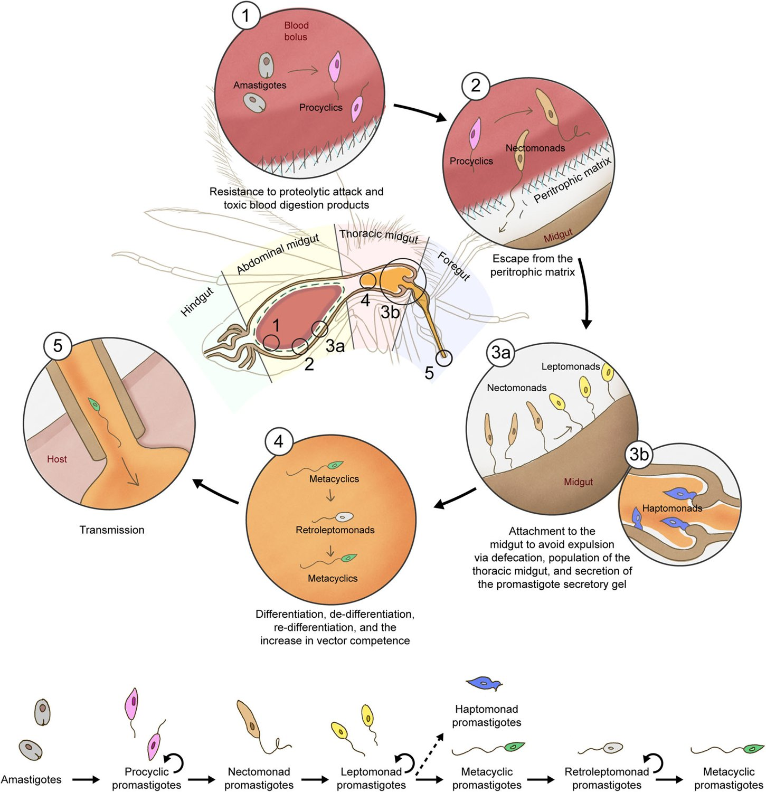

Sand fly biology and disease
Phlebotomine sand flies are tiny blood-feeding flies and the only proven vectors of Leishmania parasites. This page summarises their biology, their role in transmitting disease, and why correct identification matters.
What are sand flies?
- Insects of the order Diptera (suborder Nematocera), family Psychodidae, subfamily Phlebotominae (Crosskey 1993; Cecílio et al. 2022).
- Small, hairy and pale to sandy brown, with long legs. At rest the wings are held upright in a V over the body, which separates them from other small flies such as moth flies and biting midges (Lane 1993).
- Both sexes feed on plant sugars for energy. Only females take blood, which they need to develop eggs (a few species are autogenous).
- They are weak, hopping fliers and usually stay within about 100 m of where they developed. They are active mainly from dusk to dawn, and their bite is often painless and goes unnoticed (CDC 2024a).
- They occur between about latitude 50° N and 40° S wherever the temperature stays above about 15.6 °C for at least three months a year. They are absent from New Zealand and the Pacific islands (Cecílio et al. 2022).

Classification
There is no single agreed classification. The widely used conservative system recognises six genera (Cecílio et al. 2022):
| Region | Genera (conservative system) | Notes |
|---|---|---|
| Old World | Phlebotomus (13 subgenera), Sergentomyia (10 subgenera), Chinius | Many authors also treat Idiophlebotomus, Grassomyia, Spelaeomyia and Parvidens as genera. This site treats Idiophlebotomus, Grassomyia and Chinius as genera. |
| New World | Lutzomyia (in the broad sense), Brumptomyia, Warileya | Galati's classification splits Lutzomyia into about 20 genera, for example Nyssomyia, Psychodopygus and Bichromomyia. |
Human-biting vectors belong mainly to Phlebotomus (Old World) and Lutzomyia in the broad sense (New World). Sergentomyia has the greatest species diversity and mostly feeds on reptiles, but some species also bite mammals and humans. Identification still rests mainly on microscopic characters of slide-mounted adults, increasingly supported by DNA barcoding (COI, cytb) and MALDI-TOF mass spectrometry. See the identification keys and the glossary of characters.


Life cycle


Unlike mosquitoes, sand flies have no aquatic stage. The immature stages live in humid, sheltered places rich in organic matter.
- Eggs: 30–70 per female per gonotrophic cycle, laid in cracks in the ground, animal burrows, termite mounds or leaf litter. They hatch in 4–20 days and can diapause in poor conditions.
- Larvae: four instars that feed on organic matter, taking about 20–30 days. The fourth instar can diapause through winter for months.
- Pupae: do not feed. Adults emerge after 6–13 days, at night and often just before dawn. Males emerge first.
- Adults: males live about a week in the wild. Females may complete two or three gonotrophic cycles and lay eggs 5–8 days after a blood meal.
Most species feed outdoors (exophagic). Some rest and feed inside houses and animal shelters (endophilic, peridomestic species), which brings them into close contact with people.
Blood feeding
Mosquitoes feed directly from a blood vessel, but sand flies are pool feeders. They cut the skin with their toothed mandibles, which work like scissors, and drink from the small pool of blood that forms. Their saliva contains fewer than about 40 secreted proteins, including a vasodilator, an apyrase that stops platelets from clumping, and anticoagulants. Some salivary proteins also change the local immune response in ways that help Leishmania become established. Sand flies usually feed on whichever suitable host is closest, so people are often incidental hosts of zoonotic Leishmania (Cecílio et al. 2022).
Diseases transmitted by sand flies
| Pathogen | Disease | Where |
|---|---|---|
| Leishmania spp. (about 20 species infect humans) | Leishmaniasis: cutaneous, mucosal and visceral forms | Parts of about 90 countries in the tropics, subtropics and southern Europe |
| Phleboviruses, e.g. sandfly fever viruses and Toscana virus | "Sandfly" or "pappataci" fever. Toscana virus can cause meningitis and encephalitis. | Mediterranean, Middle East, Africa, Asia |
| Bartonella bacilliformis | Carrion's disease: Oroya fever and verruga peruana | Andean valleys of South America |
Forms of leishmaniasis
Cutaneous (CL)
The most common form. Skin sores appear weeks to months after the bite, often with a raised edge and a central crater. They may heal on their own over months or years but leave scars (CDC 2024a).
Mucosal (ML/MCL)
Destructive lesions of the nose, mouth or throat that can follow CL, mainly with some Viannia species in Central and South America (CDC 2024a).
Visceral (VL, kala-azar)
Affects the spleen, liver and bone marrow, causing fever, weight loss, an enlarged spleen and liver, and anaemia. It is usually fatal if untreated and more severe in people with HIV or malnutrition (CDC 2024a, 2024b).
Each Leishmania species is associated mainly with one form of disease, a few vector species and particular reservoir hosts. Most species are zoonotic. L. donovani on the Indian subcontinent and in East Africa is mainly anthroponotic (spread from person to person by Ph. argentipes and Ph. orientalis, for example). There are no vaccines or drugs to prevent infection (Cecílio et al. 2022; CDC 2024a).
Leishmania inside the sand fly
The parasite has two forms. Amastigotes (1–5 µm) live inside macrophages of the vertebrate host. Promastigotes (about 10–12 µm, with a flagellum) develop only in the sand fly gut and are never found in human tissue (CDC 2024b).
- A female sand fly takes up amastigotes in infected cells with a blood meal.
- In the midgut they change into procyclic promastigotes, which multiply inside the blood meal, enclosed by the peritrophic matrix.
- Nectomonad promastigotes escape the peritrophic matrix and attach to the midgut wall, so they are not passed out when the fly digests and excretes the blood meal.
- Leptomonads multiply in the anterior midgut and secrete a gel (PSG) that plugs the gut and damages the stomodeal valve.
- They become infective metacyclic promastigotes. A later blood meal can turn some back into dividing "retroleptomonads", which increases the infection.
- The blocked fly regurgitates metacyclics into the skin, together with saliva, gel and gut bacteria, all of which help infection. Macrophages take up the parasites, which change back into amastigotes.
Most species develop only in the midgut (suprapylarian). Species of the subgenus Viannia first colonise the hindgut (peripylarian) (Cecílio et al. 2022; CDC 2024b).


What makes a sand fly a vector?
Finding a sand fly that carries Leishmania is not enough to call it a vector. A species is a proven vector when it meets all of these criteria (Killick-Kendrick 1990; WHO 2010):
- It bites humans (anthropophilic).
- For zoonotic parasites, it also bites the reservoir host.
- It is found naturally infected with the same Leishmania species that infects people in the same area.
- The parasite completes its development in the fly, including after the blood meal has been digested and excreted.
- It can transmit the parasite to a new host by biting.
Thailand and Southeast Asia
- Autochthonous (locally acquired) leishmaniasis in Thailand is caused mainly by Leishmania (Mundinia) martiniquensis and L. orientalis. Both cause cutaneous and visceral disease, and many reported patients were HIV-positive (Pothirat et al. 2014; Jariyapan et al. 2018; Ahmadi et al. 2024).
- Their natural vectors are still unknown (Cecílio et al. 2022). Leishmania DNA has been found in field-caught Se. gemmea, Se. barraudi, Se. khawi and Se. iyengari in areas with human cases, so these are suspected vectors (Kanjanopas et al. 2013; Chusri et al. 2014; Siripattanapipong et al. 2018; Srisuton et al. 2019). Laboratory studies suggest that Mundinia parasites can also develop in biting midges (Culicoides), so the vector question remains open.
- Surveys in Laos from 2014 to 2024 recorded 25 sand fly species in five genera (Vongphayloth et al. 2026). Several are also recorded in Thailand; see the Thailand records and the Laos keys on the keys page.
Prevention
Avoid peak hours
Limit outdoor activity from dusk to dawn, when sand flies are most active.
Cover and repel
Wear long sleeves and trousers. Use an insect repellent on exposed skin and permethrin-treated clothing.
Fine mesh and air
Sand flies are small enough to pass through ordinary mosquito nets. Use fine-mesh or insecticide-treated nets. Fans and air conditioning also deter them.
There is no vaccine or preventive drug, so avoiding bites is the main protection (CDC 2024a). The measures above are general bite-prevention advice; see the CDC leishmaniasis pages for current guidance. Vector control (indoor residual spraying, treated nets, and controlling reservoir hosts) depends on knowing which species are the local vectors, which is why accurate identification matters.
References
- Ahmadi, M. et al. (2024) An update on Leishmania martiniquensis infections: transmission, clinical characteristics, and treatment.
- CDC (2024a) About leishmaniasis. cdc.gov/leishmaniasis/about (6 March 2024).
- CDC (2024b) DPDx – Leishmaniasis. cdc.gov/dpdx/leishmaniasis (last reviewed 5 June 2024).
- Cecílio, P., Cordeiro-da-Silva, A. & Oliveira, F. (2022) Sand flies: basic information on the vectors of leishmaniasis and their interactions with Leishmania parasites. Communications Biology 5: 305. doi:10.1038/s42003-022-03240-z (CC BY 4.0).
- Chusri, S. et al. (2014); Kanjanopas, K. et al. (2013); Siripattanapipong, S. et al. (2018); Srisuton, P. et al. (2019): detection of Leishmania in sand flies in Thailand.
- Crosskey, R. W. (1993) and Lane, R. P. (1993) In: Lane, R. P. & Crosskey, R. W. (eds) Medical Insects and Arachnids. Chapman & Hall.
- Jariyapan, N. et al. (2018) Leishmania (Mundinia) orientalis n. sp., a parasite from Thailand responsible for localised cutaneous leishmaniasis. Parasites & Vectors 11: 351.
- Killick-Kendrick, R. (1990) Phlebotomine vectors of the leishmaniases: a review. Medical and Veterinary Entomology 4: 1–24.
- Pothirat, T. et al. (2014) First isolation of Leishmania from northern Thailand. PLoS Neglected Tropical Diseases 8: e3339.
- Vongphayloth, K. et al. (2026) Sand fly inventory of Laos, 2014–2024.
- WHO (2010) Control of the leishmaniases. WHO Technical Report Series 949.